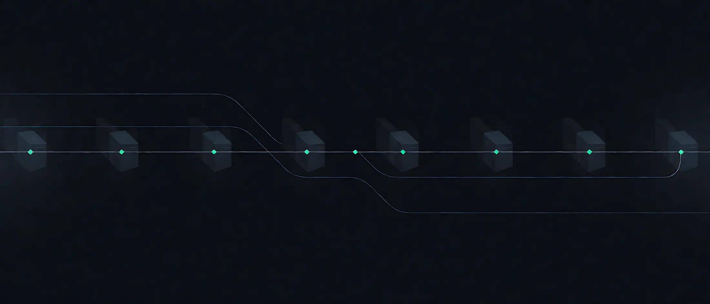

支持多种 Web 服务器
Apache 2.4+
自动改写虚拟主机并重载服务。
nginx 0.8.48+
改写 server 块并重载 nginx。
webroot
往站点目录写文件来验证控制权，不动服务器配置。
standalone
临时跑一个简易 Web 服务器来完成验证。
其他服务器软件可以通过第三方插件接入。
http 到 https，只差一个字母网址从 http 变成 https，连接从明文变成加密。
Web 上的安全通信依赖 HTTPS，而 HTTPS 需要数字证书，好让浏览器验证 Web 服务器的身份：这真的是 google.com 吗？
ACME · RFC 8555
你打开一个 https 网站，浏览器会先确认这个站点确实是它自称的域名。确认方式就是数字证书：证书由受信任的第三方签发，加密之后随每个响应发到浏览器手里。
证书由证书颁发机构（CA）签发。Let's Encrypt 是一个开放免费的 CA，由 EFF、Mozilla 及其他机构发起。Certbot 就是负责这件事的客户端，它用 ACME 协议和 CA 通信。
签发之前，CA 要确认你真的控制这个域名。Certbot 支持多种验证方式：往 webroot 目录写一个文件，或者临时跑一个简易 Web 服务器（standalone）。验证通过后，私钥在你的系统本地生成，证书随即部署到 Web 服务器。
入门的最佳方式是使用官方交互式指南，它会根据你的配置生成对应的操作说明。下面的速查器给出一个可直接运行的起点命令。
还没有生成命令。选一个 Web 服务器，填入域名，然后点“生成命令”。
命令由本地模板生成，只覆盖常见场景。权限、端口占用、已有虚拟主机等细节请以官方文档为准。
Certbot 应当直接在你的 Web 服务器上通过命令行运行，而不是在你的个人电脑上。
在大多数情况下，运行 Certbot 需要你的 Web 服务器具备超级用户或管理员权限，命令里的 sudo 就是为此准备的。
配置变更会被记录，并且可以回滚。首次运行前 Certbot 会先和交互式指南确认要改什么。

证书有效期很短，所以续期必须是自动的。
Certbot 的定时任务会在过期之前完成续期，并把新证书部署回 Web 服务器。你不需要记住日子，也不需要盯着日历。
当前特性
Apache 2.4+
自动改写虚拟主机并重载服务。
nginx 0.8.48+
改写 server 块并重载 nginx。
webroot
往站点目录写文件来验证控制权，不动服务器配置。
standalone
临时跑一个简易 Web 服务器来完成验证。
其他服务器软件可以通过第三方插件接入。
LOCAL KEY
私钥在你的系统本地生成。Certbot 不上传、不托管、不代管你的密钥。
ECDSA / RSA
默认使用 ECDSA，也支持 RSA 证书私钥。
LIFECYCLE
可获取域名验证（DV）证书，域名确认通过后签发；证书出问题也可以随时吊销。
AUTOMATION
可选择安装 http 到 https 重定向，让你的站点实际上仅以 https 运行。配置变更会被记录，并且可以回滚。
RFC 8555
可与 Let's Encrypt 通信，也可选择性地与其他兼容 ACME 的服务通信。
如果你使用的是托管服务，且无法直接访问自己的 Web 服务器，那么你可能无法使用 Certbot。别硬来。
先问托管服务商：他们的控制面板是否提供上传证书的入口。
如果支持，可以自行申请一张 Let's Encrypt 签发的证书，再手动上传上去。
请向托管服务商咨询有关上传证书或使用 Let's Encrypt 所签发证书的文档，那里会写清楚具体步骤。
Certbot 由 EFF、Mozilla 及众多贡献者共同维护，加密整个互联网这件事还没有完成。想动手的话，从开发者指南开始。
本项目受 EFF 公共项目行为准则约束。